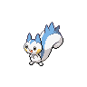

📖 英語版の図鑑説明
A species related to the Pikachu line. Though Pachirisu is a calm Pokémon, it still presents a danger should one touch its electrified tail or cheeks.
日本語訳
ピカチュウの近縁種。おとなしいが、電気を帯びた尻尾や頬に触れると危険です。
📝 この図鑑文に出てくる英単語
| 英単語 | 意味 | 品詞 | レベル |
|---|---|---|---|
| species | 種、種類 | 名詞 | 大学 |
| related | 関係のある | 形容詞 | 高校 |
| calm | 落ち着いた、静める | 形容詞 | 中3 |
| presents | 差し出す | 動詞 | 高校 |
| danger | 危険 | 名詞 | 中3 |
| touch | さわる | 動詞 | 中2 |
| electrified | 電気を帯びた | 形容詞 | 大学 |
| cheeks | ほお(複数形) | 名詞 | 高校 |
📊 パチリスの種族値
HP60
こうげき45
ぼうぎょ70
とくこう45
とくぼう90
すばやさ95
合計 405
❓ よくある質問
- パチリスの英語名は？
- パチリスの英語名は「Pachirisu」です。
- パチリスは英語版の図鑑でどう説明されている？
- 「A species related to the Pikachu line. Though Pachirisu is a calm Pokémon, it still presents a danger should one touch its electrified tail or cheeks.」と書かれています。日本語にすると「ピカチュウの近縁種。おとなしいが、電気を帯びた尻尾や頬に触れると危険です。」という意味です。
パチリスは第4世代（シンオウ地方）のポケモンです。第4世代（シンオウ地方）の英語名一覧 →